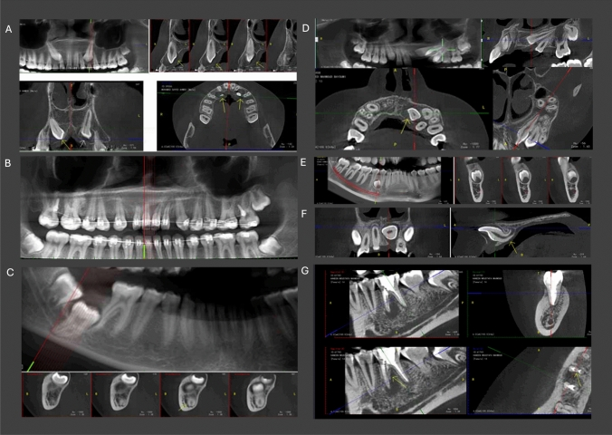

9421 — CBCT nón trong nha khoa & chỉnh nha ở trẻ: FOV, DRL và khi nào dùng phim 2D
Tags: protocol:CBCT-nha-khoa protocol:FOV protocol:DRL protocol:panoramic vung:ham-mat vung:dau-co anatomy:rang-ham
Mức chắc chắn (certainty): tổng hợp y văn — số liệu từ chương trình giám sát liều, mô phỏng Monte Carlo và khảo sát sử dụng CBCT nhi; không có thử nghiệm lâm sàng về kết cục ung thư.
1. Tổng quan — vì sao CBCT nhi là bài toán "liều theo FOV", không phải "liều theo máy"
Vật lý: CBCT dùng chùm nón (cone beam) quay quanh đầu, thu toàn bộ thể tích bằng detector phẳng. Khác CT xoắn ốc, CBCT không có mAs theo chiều trục mà phụ thuộc kV, mAs, số khung hình, cung quay và kích thước FOV. Hệ quả:
- FOV càng lớn → thể tích chiếu xạ càng lớn và càng nhiều cơ quan nguy cơ (thủy tinh thể, tuyến giáp, tuyến nước bọt) nằm trong chùm tia.
- Trẻ nhỏ có đầu nhỏ hơn → cùng kV/mAs, liều/đơn vị mô cao hơn, và các cơ quan nguy cơ gần trường chiếu hơn theo tỷ lệ cơ thể.
Vì sao quan trọng: CBCT nha khoa tăng rất nhanh, trong khi DRL (diagnostic reference level) cho CBCT nha khoa chỉ mới có ở một số nước, và chỉ một quốc gia có DRL riêng cho trẻ (PMC13584608). Hệ thống DRL hiện tại không đồng nhất về đơn vị (DAP là phổ biến) và cách phân nhóm (theo FOV hay theo chỉ định), khiến so sánh giữa các cơ sở gần như không thể (PMC13624500).
Số liệu định lượng cần nhớ:
| Bối cảnh | Liều | Nguồn |
|---|---|---|
| CBCT nha khoa, 5.163 ca, 2 máy | ED 35,1–300 µSv (Accuitomo 170) và 9,26–117 µSv (Newtom VGI EVO); ED giảm khi tuổi tăng và FOV nhỏ lại | PMC9944015 |
| CBCT người lớn (340 ca) | ED trung bình 149,5 ± 56 µSv; liều da đỉnh 39,29 mGy; tuyến nước bọt 2,71 mGy, ngoài lồng ngực 1,64, tuyến giáp 1,24, mắt 0,61 mGy; DAP điển hình 1.000 mGy·cm² | PMC9783302 |
| Panorama ở trẻ 15 tuổi (Monte Carlo) | Tuyến nước bọt/niêm mạc miệng 270–640 µGy; khác biệt theo giới: nữ +26–28% hạch đầu, nam +12–13% hạch ngoài lồng ngực | PMC13546361 |
| CBCT nhi (260 ca ≤ 18 tuổi) | 53,1% ở 6–12 tuổi; chỉ định: răng ngầm 40%, nội nha 19,6%, chỉnh nha 15,8% | PMC12532726 |
→ Một CBCT hàm mặt có thể cao gấp hàng chục lần panorama cùng vùng, và FOV là biến số lớn nhất kiểm soát được.

2. "Gamut" lựa chọn hình ảnh theo câu hỏi lâm sàng
- Câu hỏi 2D trả lời được (sâu răng, quanh chóp, mất xương ngang, theo dõi mọc răng, đánh giá sơ bộ chỉnh nha): phim cắn / quanh chóp / panorama — liều thấp hơn nhiều và đủ cho quyết định.
- Cần 3D thật sự: răng ngầm/ranh giới với ống thần kinh, nang–u hàm, chấn thương phức tạp, phân tích khớp thái dương–hàm, lập kế hoạch cấy ghép (trẻ hiếm), dị dạng sọ mặt.
- FOV nhỏ (nhỏ hơn hàm) cho một răng/vùng: liều thấp nhất, độ phân giải cao.
- FOV trung bình cho một hàm.
- FOV lớn (11 × 10 cm trở lên) cho kế hoạch phẫu thuật/đa vùng: liều cao nhất và nhiều phát hiện ngoài vùng quan tâm — 79,3% ca có phát hiện tình cờ, 89,6% nằm NGOÀI ROI (PMC13664283).
Nguyên tắc SEDENTEXCT/ALARA: "FOV nhỏ nhất đủ trả lời câu hỏi", không dùng FOV lớn "cho chắc".
3. Ma trận đối chiếu
| Phương thức | Liều tương đối | Chốt vào (dùng khi) | Chốt loại (không dùng khi) | Cạm bẫy |
|---|---|---|---|---|
| Phim cắn / quanh chóp | Thấp nhất | Sâu răng, quanh chóp, theo dõi răng sữa/vĩnh viễn | Cần 3D (răng ngầm, ống thần kinh) | Trẻ khó giữ phim → chụp lại; che chắn tuyến giáp không giải quyết được liều do chụp lại |
| Panorama | Thấp (µGy–chục µSv) | Đánh giá toàn cảnh mọc răng, chỉnh nha sơ bộ, sàng lọc | Cần chi tiết 3D, đo khoảng cách tới ống thần kinh | Méo phóng đại; không dùng để đo chính xác; phát hiện ngoài ROI ít hơn CBCT nhưng vẫn có |
| CBCT FOV nhỏ | Trung bình thấp | Một răng/vùng, nội nha phức tạp, răng ngầm khu trú | Cần đánh giá đa vùng | FOV nhỏ vẫn có thể "cắt cụt" tổn thương ở mép |
| CBCT FOV lớn | Cao nhất trong nhóm nha khoa | Kế hoạch phẫu thuật hàm mặt, chấn thương, dị dạng | Chỉ định 2D đã đủ | 79,3% có phát hiện tình cờ, 89,6% ngoài ROI; tăng tuổi và mất răng làm tăng phát hiện có ý nghĩa (OR 1,11; IRR 1,9–2,2) (PMC13664283) |
| CT/MDCT hàm mặt | Cao hơn CBCT | Chấn thương nặng, mô mềm, mạch máu | Chỉ định nha khoa thông thường | Liều cao hơn nhiều; chỉ dùng khi cần mô mềm/mạch |
Cột Chốt loại quan trọng: phần lớn chỉ định chỉnh nha ở trẻ không cần CBCT; panorama + ảnh trong miệng + mô hình số thường đủ. CBCT chỉ thêm giá trị khi câu hỏi là không gian 3D (răng ngầm, độ dày xương, khớp).
4. Protocol & ngưỡng
Checklist trước khi chỉ định CBCT cho trẻ:
- Câu hỏi lâm sàng là gì? Nếu trả lời được bằng 2D → không CBCT.
- Chọn FOV theo vùng, không theo "gói máy": FOV nhỏ cho một răng, trung bình cho một hàm, lớn chỉ khi kế hoạch phẫu thuật đa vùng.
- Chọn chế độ: độ phân giải cao (voxel nhỏ) chỉ khi cần chi tiết (nội nha, răng ngầm sát ống); chế độ chuẩn cho phần còn lại.
- Cố định đầu đúng tư thế, tránh di chuyển (gây nhòe → chụp lại).
- Không che chắn tuyến giáp thường quy: nghiên cứu tấm chắn bismuth trong panorama không cho khác biệt có ý nghĩa (PMC12774883); cách giảm liều hiệu quả là giảm FOV và số lần chụp.
- Ghi DAP (mGy·cm²) vào phiếu; so với DRL địa phương nếu có.
- Trẻ < 6 tuổi / không hợp tác: cân nhắc hoãn hoặc dùng 2D; an thần không làm giảm liều.
Ngưỡng & con số tham chiếu:
| Thông số | Giá trị | Ý nghĩa |
|---|---|---|
| ED CBCT nha khoa | 9,26–300 µSv tùy máy/FOV/tuổi | FOV và tuổi là biến số chính (PMC9944015) |
| DAP điển hình (người lớn) | 1.000 mGy·cm² | DRL tham chiếu; trẻ phải thấp hơn |
| Liều tuyến giáp CBCT | 1,24 mGy; mắt 0,61 mGy | Tuyến giáp cao gấp đôi mắt (PMC9783302) |
| Panorama 15 tuổi | 270–640 µGy tuyến nước bọt/niêm mạc | Dùng làm "mốc dưới" khi so sánh |
| Phát hiện ngoài ROI (FOV lớn) | 79,3% ca, 89,6% ngoài ROI | Lý do phải chọn FOV nhỏ (PMC13664283) |
flowchart TD
A[Trẻ cần đánh giá răng-hàm] --> B{Câu hỏi 2D trả lời được?}
B -- Có --> C[Phim cắn / quanh chóp / panorama]
B -- Không --> D{Cần 3D khu trú?}
D -- Có --> E[CBCT FOV nhỏ nhất đủ trả lời]
D -- Không --> F[CBCT FOV trung bình/lớn theo kế hoạch]
E --> G[Ghi DAP, so DRL, lưu ảnh gốc]
F --> G
C --> H[Không CBCT]
G --> I{Ảnh đủ?}
I -- Không --> J[Kiểm tra di chuyển/FOV trước khi chụp lại]
J --> I
5. Biến thể bình thường & cạm bẫy
- "FOV lớn cho chắc": FOV lớn không làm chẩn đoán chắc hơn mà tăng liều + tăng phát hiện ngoài ROI (79,3% ca; 89,6% ngoài ROI). Nhiều phát hiện này không cần xử trí, nhưng tạo lo lắng và xét nghiệm tiếp.
- Di chuyển bệnh nhi: nhòe do chuyển động là nguyên nhân chụp lại phổ biến nhất — mỗi lần lặp là gấp đôi liều. Cố định đầu và giải thích trước quan trọng hơn mọi thông số.
- Che chắn tuyến giáp: tấm chắn bismuth trong panorama không khác biệt có ý nghĩa; đừng dùng để "yên tâm".
- DRL không đồng nhất: cùng một ca, DAP của máy A không so được với máy B nếu khác cách đo/chuẩn hóa (PMC13624500/PMC13584608). Muốn so sánh phải cùng đơn vị và cùng phân nhóm tuổi/FOV.
- Tuổi nhỏ ≠ liều nhỏ: ED giảm khi tuổi tăng trong cùng protocol (PMC9944015) — trẻ nhỏ nhận liều cao hơn, nên DRL phải tách nhóm tuổi.
- Panorama không thay thế CBCT và ngược lại: panorama méo, CBCT liều cao; chọn theo câu hỏi, không theo "máy mới hơn".
6. Tự lượng giá
Câu 1. Bé 9 tuổi răng cửa ngầm, bác sĩ chỉnh nha yêu cầu "CBCT toàn hàm cho chắc". Chọn nào đúng?
Đáp án
CBCT FOV nhỏ, khu trú vùng răng ngầm (đủ xác định vị trí, độ sâu, quan hệ với ống thần kinh/chân răng bên cạnh). FOV lớn: ED cao hơn, 79,3% ca có phát hiện ngoài ROI mà phần lớn không cần xử trí. Câu hỏi "răng ngầm ở đâu" không cần cả hàm.
Câu 2. Vì sao cùng một protocol, ED của trẻ 7 tuổi lại cao hơn người 16 tuổi?
Đáp án
Đầu nhỏ hơn → cùng chùm tia nhưng ít mô hấp thụ hơn, cơ quan nguy cấp nằm gần trường hơn, và hệ số chuyển đổi ED theo tuổi khác. Dữ liệu 5.163 ca cho thấy ED giảm khi tuổi tăng trong cùng chế độ (PMC9944015) — nên DRL phải tách nhóm tuổi, không dùng một ngưỡng chung.
Câu 3. Có nên đặt tấm chắn bismuth lên cổ trẻ khi chụp panorama/CBCT?
Đáp án
Không thường quy. Nghiên cứu tấm chắn bismuth trong panorama không thấy khác biệt có ý nghĩa (PMC12774883); đồng thuận châu Âu cũng không khuyến cáo che chắn tiếp xúc. Giảm liều thật đến từ chọn FOV nhỏ, đúng chỉ định, tránh chụp lại.
Bài liên quan chéo
- 9420 — Bảo vệ thủy tinh thể và tuyến giáp trong CT sọ–cổ ở trẻ: cùng nhóm protocol nhi, khác thiết bị và FOV.
- 937 — Liều CT ở trẻ — SSDE, DRL nhi và theo dõi liều tích lũy: cách chuẩn hóa liều theo kích thước cơ thể.
- 700 — Tổng quan Đầu Mặt Cổ và mạc cổ sâu: giải phẫu vùng hàm mặt – cổ liên quan trường chiếu.
Không dùng để chẩn đoán độc lập khi chưa có người hướng dẫn. Số liệu liều phụ thuộc máy và protocol địa phương; cần DRL riêng của cơ sở.